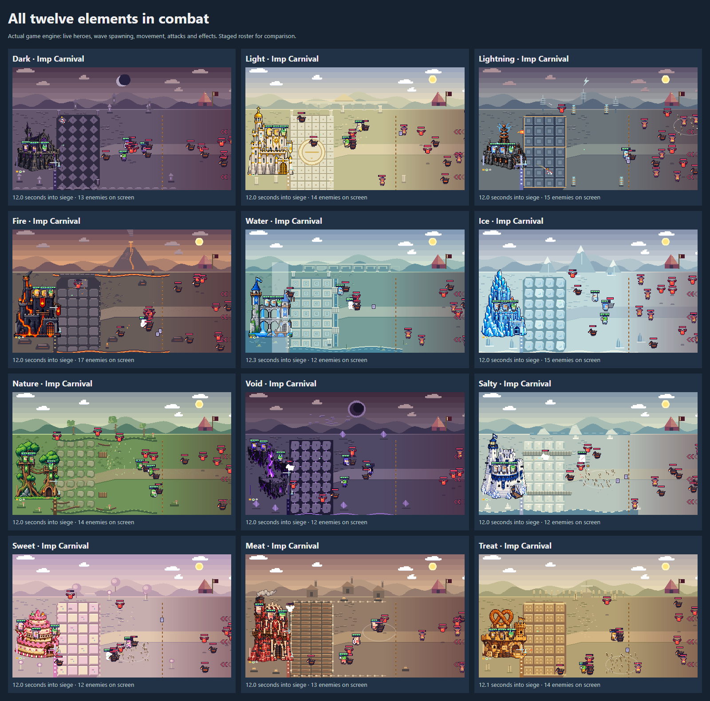

Twelve distinct castle architectures with matching battlefields and horde scenery. Ice, Meat and Salty have larger keeps; Light uses a flat side elevation. Every sprite retains its proportions.
Download this branch and open this file in Chrome. Integration notes are in README.md beside this page.